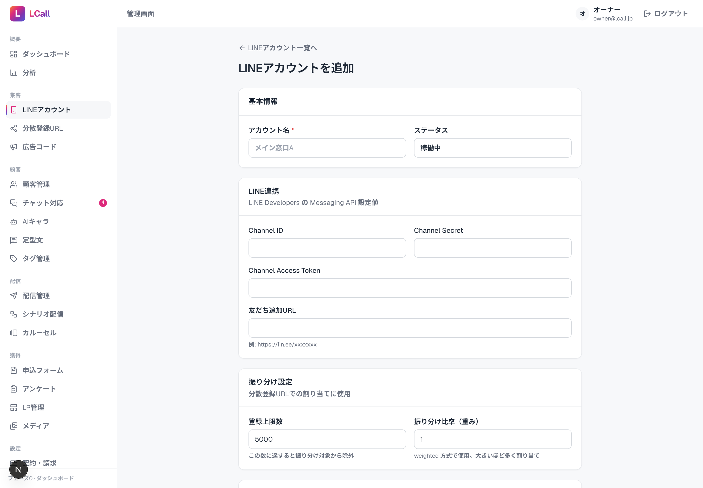
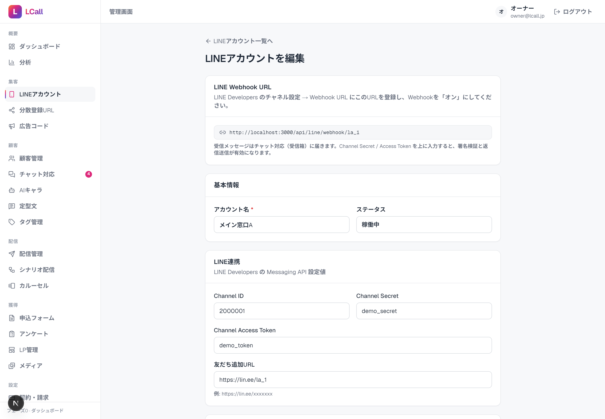

1全体像と申込〜公開の流れ
LCall は「1クライアント＝1インスタンス（専用プロセス＋専用データファイル）」で提供します（納品モデルB）。各社のデータは完全に分離され、相手のPCには何も入れません。すべて自社／クラウドのサーバー上で動かします。
申込が入ってから公開までの流れ
1
インスタンス払い出しprovision で専用 .env と秘密鍵・初期パスワードを生成
2
起動・公開build → start、独自ドメイン/HTTPSで公開（Webhookに必須）
3
LINE連携チャネル資格情報を登録し Webhook URL を LINE 側に設定
4
任意の連携AI自動応答・Stripe決済・クリック計測Worker・画像R2 を契約に応じて
5
引き渡しスタッフ権限を発行し、ログインURL＋初期パスワード＋使い方マニュアルを案内
所要時間の目安基本セット（STEP 1〜3＋引き渡し）だけなら約30分。AI・Stripe・Worker・R2 をフルで設定しても1時間程度です。任意項目は後追いでも追加できます。
2事前準備（環境・必要アカウント）
サーバー／開発環境
- Node.js 20.6 以上（
--env-fileを使用するため必須） - LCall リポジトリを配置済みであること（
npm install済み） - 公開用の HTTPSドメイン（または検証用に cloudflared / ngrok などのトンネル）
クライアントから受け取る／用意するアカウント
| LINE公式アカウント＋Messaging APIチャネル | 必須 Channel ID / Channel Secret / Channel Access Token（長期）。developers.line.biz |
|---|---|
| Anthropic API キー | 任意 AI自動応答を使う場合。クレジット残高の入金が必要。 |
| Stripe アカウント | 任意 自動課金を使う場合。テスト=sk_test_／本番=sk_live_。 |
| Cloudflare アカウント | 任意 クリック計測Worker・画像保管R2 を使う場合。 |
重要LINEやStripeのWebhookは外部からアクセスできるHTTPS URLが必須です。クライアントのPCやローカルだけでは本番稼働できません（必ずサーバー／クラウドに公開）。
STEP 1インスタンスの払い出し（provision）
1コマンドで、そのクライアント専用の設定ファイル・秘密鍵・初期ログインパスワードを生成します。
コマンド
# slug＝英小文字/数字/ハイフン（例: acme-corp）。port は他インスタンスと重複しない番号。
npm run provision -- acme-corp --port 3001 --email owner@acme.co.jp生成されるもの・出力
clients/acme-corp/.env… 専用設定（file アダプタ・空シード・ユニークな秘密鍵を自動設定）clients/acme-corp/data.json… 初回起動時に空で自動生成（このクライアントのデータ）- コンソールに初期ログインパスワードが1度だけ表示されます（保存はハッシュのみ）。必ず控えてください。
✓ クライアント「acme-corp」を作成しました
■ 初期ログイン情報（クライアントへ安全に共有。初回ログイン後の変更推奨）
メール : owner@acme.co.jp
パスワード : k7Bq2f-Xa9 # ← この場で控える（再表示されません）--email を付け忘れたら
clients/<slug>/.env の LCALL_ADMIN_EMAIL に管理者メールを記入してください。パスワードを変えたいときは npm run hash-password -- '新パスワード' の出力を LCALL_ADMIN_PASSWORD_HASH に貼って再起動します。STEP 2ビルドと起動・公開URL
起動手順
# 1) 本番ビルド（dev サーバが動いていれば必ず停止してから）
npm run build
# 2) そのクライアントの .env を読み込んで起動（Node 20.6+ の --env-file）
node --env-file=clients/acme-corp/.env ./node_modules/next/dist/bin/next start公開URL（HTTPS）
- 独自ドメイン／リバースプロキシ（Nginx 等）で
https://acme.example.comをこのプロセス（PORT）に向けます。 - 検証だけなら
cloudflared tunnel --url http://localhost:3001で一時HTTPSを発行できます（URLは毎回変わる点に注意）。 - ブラウザで
/loginを開き、STEP 1 のメール＋初期パスワードでログインできることを確認します（開発用ログインは無効になっています）。
注意
.env を編集したらプロセスの再起動が必要です。また next dev と next build の同時実行は型生成ファイルを壊すため避けてください（ビルド前に dev を停止）。STEP 3LINE連携の設定
受信（Webhook）と返信（push送信）を有効化します。管理画面でアカウントを作り、表示されるWebhook URLをLINE側に登録するだけです。

手順
- 管理画面 LINEアカウント → 新規追加 でアカウント名を登録します。
- 編集画面で Channel Secret と Channel Access Token を入力して保存します。
- 画面上部に表示される LINE Webhook URL（
{公開URL}/api/line/webhook/{アカウントID}）をコピーします。 - LINE Developers コンソール → 対象チャネル → Messaging API設定 で：
- Webhook URL に上記を設定し、Webhookの利用を「オン」
- 「検証」ボタンで疎通確認（200が返ればOK）
- 応答メッセージ（自動応答）はオフ推奨（手動／AI対応にするため）

仕組みメモ署名検証は各アカウントの Channel Secret で行います。
demo_token 以外の実トークンが設定されているときのみ、受信時のプロフィール取得と返信のpush送信を実行します。署名不正は401を返します。STEP 4AI自動応答の設定（任意）
受信メッセージに Claude が自動返信します。料金は1応対あたり ¥3の従量です。
手順
clients/<slug>/.envのANTHROPIC_API_KEYに共通キーを設定（または管理画面のLINEアカウント編集でアカウント別キーを設定）。- Anthropic 側でクレジット残高があることを確認（残高ゼロだと生成に失敗し、AIは無反応になります）。
- 管理画面 AIキャラ で人格（ペルソナ）・FAQ・モデルを作成。
- LINEアカウント編集の「AI自動応答」カードでオンにし、使うAIキャラを選択。
未設定時の挙動キー未設定・残高なしのときAIは応答しません（安全側）。スタッフが手動返信すると、その相手のAIは自動で一時停止します。
STEP 5Stripe決済の設定（任意）
未設定なら請求は「モック動作」です。実課金にするにはシークレットキー（pk_公開キーは不可）とWebhookを設定します。
手順
.envにSTRIPE_SECRET_KEYを設定（テスト=sk_test_／本番=sk_live_）。- Stripeダッシュボードで Webhookエンドポイントを追加：URL=
{公開URL}/api/stripe/webhook。 対象イベント：checkout.session.completed/invoice.paid/invoice.payment_failed/customer.subscription.updated/customer.subscription.deleted。 - 表示された署名シークレット（
whsec_...）を.envのSTRIPE_WEBHOOK_SECRETに設定し、再起動。 - クライアントは /billing でプランを選び Stripe Checkout で申込みます。
料金・商品について
- 商品/価格は lookup_key で自動作成・再利用されます（
lcall_monthly_<plan>とlcall_setup）。事前の商品登録は不要です。 - プラン：Lite ¥9,800／Standard ¥15,000／Pro ¥25,000（月額）＋初期導入 ¥50,000（共通）＋AI ¥3/応対。
テスト確認（テストモード時）
# ローカル検証は Stripe CLI でWebhookを転送し、whsec_ を .env に設定
stripe listen --forward-to {公開URL}/api/stripe/webhook
# テストカード 4242 4242 4242 4242 / 任意の将来日 / 任意のCVCSTEP 6クリック計測Worker（任意）
配信リンクのクリックを計測する Cloudflare Worker。設定するとクリック数・自動タグ付与・流入元計測が有効になります。
cd worker
wrangler login
wrangler kv namespace create LINKS # 出力 id を wrangler.toml の [[kv_namespaces]].id に
wrangler secret put WORKER_KEY # Next の LCALL_WORKER_KEY と同じ値にする
# wrangler.toml の NEXT_BASE_URL を本番Nextのオリジンに変更
npm run deploy- デプロイ後の公開URL（例
https://lcall-tracker.<account>.workers.dev）を、クライアント.envのTRACKING_BASE_URLに設定。 LCALL_WORKER_KEY（Next側）と Worker のWORKER_KEYを必ず一致させる。- 再起動後、配信のURL種別／カルーセルのボタンが計測URL経由になります。
STEP 7画像保管 R2（任意）
未設定なら画像はローカル public/uploads に保存されます。R2（S3互換）を設定すると公開HTTPS URLで保存します。
- Cloudflare R2 でバケットと公開ドメインを用意。
.envにR2_ACCOUNT_ID/R2_ACCESS_KEY_ID/R2_SECRET_ACCESS_KEY/R2_BUCKET/R2_PUBLIC_BASE_URLを設定し再起動。
カルーセルはHTTPS必須実際のLINEカルーセルの画像はHTTPS URLが必要です。ローカル保存だと管理画面プレビューには出てもLINE送信では表示されません。本番でカルーセルを使うならR2の設定を推奨します。
STEP 8スタッフ発行・クライアント引き渡し
オーナー権限でログインし、必要なスタッフ権限を発行してから、クライアントに引き渡します。

権限（ロール）の割り当て
| オーナー | 全画面（分析・契約請求・スタッフ管理を含む）。クライアント代表者に付与。 |
|---|---|
| 運用担当 | 配信・LINE設定・フォーム等。分析・お金・スタッフ管理は不可。 |
| チャット対応 | チャット・顧客・タグ・定型文のみ。配信・お金・分析は不可。 |
引き渡し時にクライアントへ伝えること
- ログインURL（
{公開URL}/login） - 管理者メールアドレスと初期パスワード（初回ログイン後の変更を案内）
- 使い方マニュアル（
LCall-使い方マニュアル.pdf）を添付 - スタッフは /staff からクライアント自身で追加・権限変更できる旨
運用スタッフ発行はクライアント自身（オーナー）でも可能です。最初の1名（オーナー）だけ provision で発行し、以降は自己管理してもらう運用が基本です。
11環境変数（.env）一覧
クライアントごとの clients/<slug>/.env に設定します。provision が必須項目を自動生成済みです。
| 変数 | 区分 | 用途・備考 |
|---|---|---|
LCALL_DATA_ADAPTER | 必須 | 納品は file（provision が自動設定）。 |
LCALL_DATA_FILE | 必須 | このインスタンスのデータ保存先。./clients/<slug>/data.json。 |
LCALL_SEED | 必須 | 新規納品は empty（デモ無し）。 |
LCALL_SESSION_SECRET | 必須 | セッション署名鍵。provision がランダム生成。使い回し禁止。 |
LCALL_ALLOW_DEV_LOGIN | 必須 | 本番は false（provision 既定）。 |
PORT | 必須 | このインスタンスの待受ポート。重複させない。 |
LCALL_ADMIN_EMAIL | 必須 | 初期オーナーのログインメール。 |
LCALL_ADMIN_PASSWORD_HASH | 必須 | scryptハッシュ。npm run hash-password で生成。 |
ANTHROPIC_API_KEY | 任意 | AI自動応答。未設定でAI無効。 |
STRIPE_SECRET_KEY | 任意 | 未設定で請求はモック。sk_test_/sk_live_。 |
STRIPE_WEBHOOK_SECRET | 任意 | Webhook署名 whsec_。Stripe使用時は必須。 |
TRACKING_BASE_URL | 任意 | クリック計測WorkerのURL。未設定で計測なし。 |
LCALL_WORKER_KEY | 任意 | Worker↔Next 共有鍵。Worker側と一致必須。 |
R2_ACCOUNT_ID 他4種 | 任意 | 画像保管R2。未設定はローカル保存。 |
GOOGLE_CLIENT_ID 他 | 任意 | Google OAuth併用時。LCALL_ALLOWED_EMAILS の許可制。 |
12申込完了チェックリスト
すべてチェックできたら「公開完了」とみなします。
- provision でインスタンスを払い出し、初期パスワードを安全に控えた
- build → start でプロセスが起動し、HTTPSの公開URLで開ける
/loginでオーナーがログインできる（開発ログインは無効）- LINEアカウントを作成し、Webhook URLをLINE側に登録、「検証」が200
- テスト送信／受信が
/inboxに表示され、返信がLINEに届く - （AI利用時）残高あり・AIキャラ設定済み・アカウントでON
- （Stripe利用時）Webhook登録済み・
whsec_設定済み・Checkout成功でactive - （計測利用時）Workerデプロイ済み・
TRACKING_BASE_URL/LCALL_WORKER_KEY一致 - スタッフ権限を発行（または案内）し、使い方マニュアルを引き渡した
13トラブルシュート・運用Tips
| ログインできない | LCALL_ADMIN_EMAIL/LCALL_ADMIN_PASSWORD_HASH を確認。変更後は再起動。開発ログインは本番無効。 |
|---|---|
| LINEの「検証」が失敗 | 公開URLがHTTPSで到達できるか、Webhook URLのアカウントIDが正しいか、Channel Secret入力済みかを確認。署名不正は401。 |
| AIが返信しない | キー未設定／クレジット残高不足／相手のAIが一時停止／アカウントのAIがオフ、のいずれか。 |
| 請求がモックのまま | STRIPE_SECRET_KEY 未設定。設定して再起動。pk_公開キーは不可。 |
| カルーセル画像がLINEで出ない | 画像がHTTPSでない。R2を設定するか、HTTPSの絶対URLを使う。 |
| .env を変えたのに反映されない | プロセスの再起動が必要。 |
| データを消したくない | file アダプタは clients/<slug>/data.json に永続化。バックアップ対象に含める。 |
| パスワード変更 | npm run hash-password -- '新パス' → 出力を LCALL_ADMIN_PASSWORD_HASH に貼って再起動（オーナーのブートストラップ用。スタッフは /staff から変更可）。 |
14セキュリティ取扱
- 秘密情報を平文でチャット／メール本文に貼らない。 鍵類は
.envに直接記入（clients/はコミット禁止＝.gitignore済み）。 - 初期パスワードは安全な経路で共有し、初回ログイン後の変更を案内する。
- 各インスタンスの
LCALL_SESSION_SECRETは使い回さない（provision が毎回ランダム生成）。 - テストで使ったAPIキー（Anthropic / Stripe）が外部に露出した可能性があればローテーション（再発行）する。
- 本番は
LCALL_ALLOW_DEV_LOGIN=false、Google併用時はLCALL_ALLOWED_EMAILSを必ず設定（空は全拒否）。
取扱注意本書および作業中に扱う Channel Secret / Access Token / APIキー / 初期パスワードはすべて秘密情報です。社内限定で管理してください。
LCall 導入設定マニュアル（開発・運用スタッフ向け）／ 社内限定・取扱注意。 © 2026 LCall